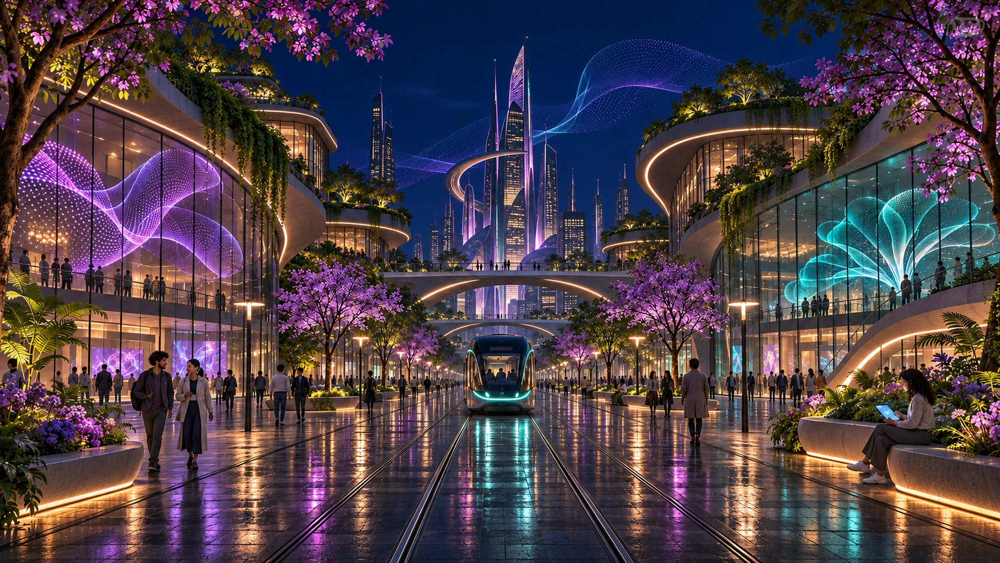
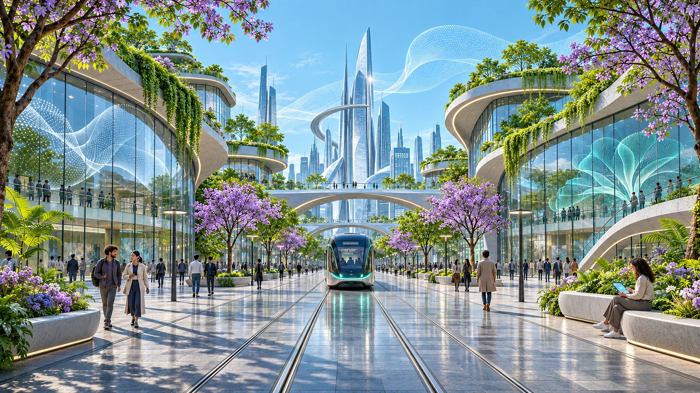

ChatGPT Images
Симметричная композиция, трамвай в центре, зелёные террасы. На трамвае есть неразборчивые мелкие надписи.
ПРАКТИКА / ТРИ ЭКСПЕРИМЕНТА
Один замысел, три результата. Сравните свет в городе будущего, посмотрите, как он оживает, и послушайте песню, созданную по учебной теме.
ЭКСПЕРИМЕНТ 01 / ИЗОБРАЖЕНИЯ
Задача — изменить освещение исходного города, сохранив архитектуру и ракурс.


Двигайте границу мышью, касанием или стрелками клавиатуры.
Результат. Общая композиция сохранена. Изменились свет, окна и отражения; мелкие детали фасадов и фигуры людей различаются.
Оба варианта — независимые редактирования одного базового кадра. Ниже приведены оригинальные запросы из паспорта проекта. Точная версия ChatGPT Images инструментом не указана.
Create a refined cinematic concept art image for a modern digital museum exhibition about generative AI. A visionary future city boulevard at blue hour, symmetrical street-level perspective, lush planted terraces integrated in architecture, a sleek tram in the center, human-scale pedestrians, atmospheric violet and teal light, careful coherent architectural geometry, no lettering, no logo, no text. Wide 16:9 composition, editorial art direction, highly detailed but tasteful, premium science museum feel. This is an original generated visual exhibit.
Edit the supplied image as an architectural continuity study. Produce a photorealistic clear DAY version of precisely the same future-city boulevard. Preserve the exact framing and perspective, every major building outline, the left and right curved rooflines, central slender towers and two bridges, tree positions, sidewalk and rail lines, and the tram's position and silhouette. Change ONLY lighting and atmosphere: crisp late morning sun, pale cyan sky, believable daylight reflections, natural green foliage, illuminated by sunlight rather than magenta lights. No new buildings, vehicles, signs or camera shift. No added text. High resolution wide composition.
Edit the supplied image as an architectural continuity study. Produce a photorealistic NIGHT version of precisely the same future-city boulevard. Preserve the exact framing and perspective, every major building outline, left and right curved rooflines, central slender towers and two bridges, tree positions, sidewalk and rail lines, and the tram's position and silhouette. Change ONLY lighting and atmosphere: deep cobalt night sky, realistic warm windows, restrained violet and cyan architectural lighting and wet pavement reflections. Keep people and tram in the same locations. No new buildings, vehicles, signs or camera shift. No added text. High resolution wide composition.
Независимые генерации по одному базовому запросу, без изображения-референса. Это два отдельных результата, а не рейтинг инструментов.
Симметричная композиция, трамвай в центре, зелёные террасы. На трамвае есть неразборчивые мелкие надписи.

Трамвай смещён вправо, больше прохожих, в глубине — купол. Точный идентификатор модели интерфейс не сообщил.
Оценивайте соответствие запросу, композицию и мелкие детали. Полный общий запрос — в блоке выше.
ЭКСПЕРИМЕНТ 02 / ВИДЕО
Задача — оживить готовое изображение: добавить движение трамвая, прохожих и камеры.
Результат. Трамвай приближается, люди идут, камера плавно движется вдоль бульвара. Основные здания сохранены; мелкие детали местами меняются. Знак генератора оставлен в кадре.
Оригинальный запрос из паспорта материалов:
Animate the uploaded image as the exact opening frame. Keep the same boulevard, buildings, bridges, trees, tram tracks, camera angle and composition throughout. The single tram glides slowly toward the camera along its rails; pedestrians on both sidewalks walk naturally at different speeds; cherry blossoms and hanging greenery sway gently in a light breeze. Reflections from the violet and teal lights shimmer subtly on the pavement. A very gentle forward camera push, stable and cinematic. Dusk lighting remains consistent. No new vehicles, no extra people suddenly appearing, no morphing architecture, no cuts, no text overlays. Natural, physically coherent motion.
Google Vids, «Анимировать», Omni, 720p, горизонтально, 10 с. Экспорт: H.264/AAC, 1920×1080, 30 кадров/с, 10,09 с. Разрешение экспорта не определяет исходное разрешение генерации. Версия Omni не уточнялась; этот ролик не приписывается Veo.
Второй ролик пока не предоставлен. Здесь можно будет сравнить движение камеры, сохранность архитектуры и детали двух генераций по одному исходному кадру.
ЭКСПЕРИМЕНТ 03 / МУЗЫКА
Задача — создать песню о домашнем задании по предмету «Введение в профессию» и генеративном ИИ.
SUNO / АВТОРСКИЙ ЭКСПЕРИМЕНТ
От учебной темы — к полноценной песне. Композиция создана автором проекта в Suno.

Suno · 2 мин 41 с · музыкальная генерация
Результат. Готовая музыкальная композиция по теме задания. Нажмите воспроизведение, чтобы оценить звучание и связь песни с исходной идеей.
Запрос предоставлен автором проекта:
Сгенерируй песню о выполнении домашнего задания по предмету «Введение в профессию» на тему генеративного искусственного интеллекта.
Инструмент — Suno. MP3 предоставлен автором; точная версия модели и дата генерации не указаны. Название на сайте — выставочная подпись композиции.
ЛАБОРАТОРНАЯ №11 / СОБЫТИЯ
При наведении цвет этого текста меняется.
При наведении меняется фон этого абзаца.
Фон этого абзаца меняется только пока курсор находится над ним.
Наведите на этот текст — фон страницы изменится.